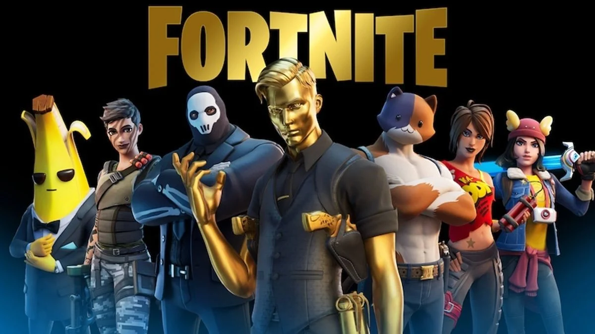
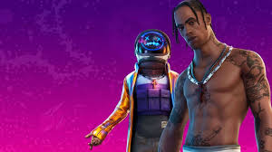
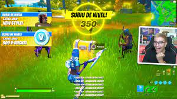
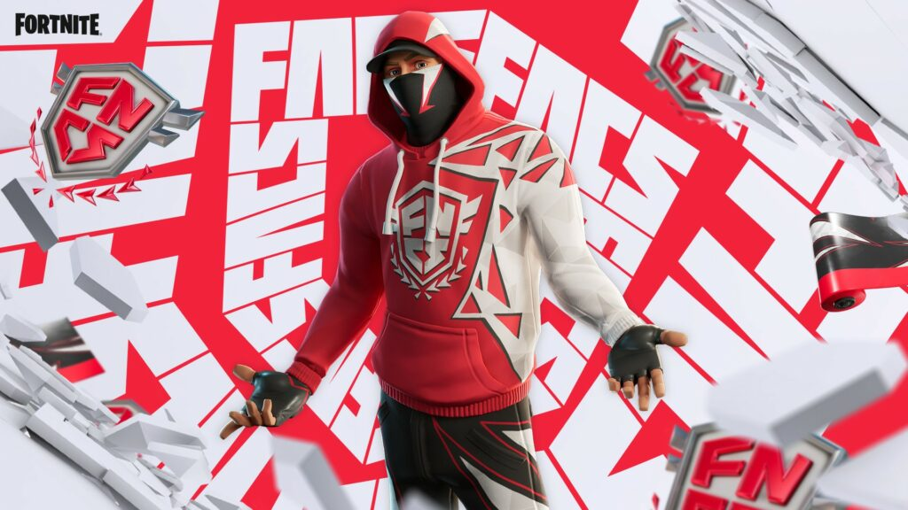

Temporadas
As temporadas são temáticas e muitas vezes têm uma história que se desenrola ao longo delas, envolvendo eventos ao vivo que afetam o mundo do jogo e a jogabilidade. Além disso, as temporadas costumam trazer desafios semanais e colecionáveis, incentivando os jogadores a explorarem o mapa e interagirem mais com o jogo. Saiba mais...
Eventos
Os eventos em Fortnite são momentos especiais dentro do jogo que trazem experiências únicas e interativas para os jogadores. Esses eventos geralmente estão ligados à narrativa da temporada em curso e podem ter impactos significativos no mapa e na jogabilidade. Saiba mais...
Niveis
Os níveis em Fortnite são uma forma de os jogadores acompanharem seu progresso e também incentivam a participação em desafios e eventos para desbloquear recompensas exclusivas. Além disso, os níveis podem ser exibidos publicamente para mostrar o quão experiente um jogador é dentro da comunidade do Fortnite . . ..... Saiba mais...
Passe
Toda temporada tem um passe de batalha, e usa bastante os niveis, e podem ganhar roupas para deixar seu boneco mais bonito, e dancinhas para comemorar a vitoria royale. Saiba mais...

Campeonatos
A FNCS (Fortnite Champion Series) é um dos principais campeonatos competitivos de Fortnite, organizado pela Epic Games. É uma série de torneios que acontecem ao longo do ano, divididos em várias temporadas, e reúnem os melhores jogadores profissionais e equipes de todo o mundo para competir por prêmios em dinheiro e reconhecimento na comunidade de Fortnite. Saiba mais...
